HṛdayaFlow トップへFEATURE BROWSER · v0.0.3
HṛdayaFlow にできることを、スクロール 1 分で。
気になった機能はクリックでマニュアルへ。
01 · CONTENT
テキストだけじゃない。動画・音声・コード・数式・Web 埋め込みまで、思考の素材を全部 1 枚の上に置ける。
02 · CANVAS
どこにでも置ける自由度と、揃えれば整然となるオートレイアウトのハイブリッド。
03 · FORMAT
Scapple の NOTE FORMAT 相当 + 拡張。複数選択で一括変更も。
04 · INTEROP
主形式は .hrf v0.2 (ZIP)。Mermaid・Obsidian Canvas・OPML・XMind・FreeMind・Scapple・Markdown と双方向 / 片方向で行き来。
05 · AI
stub (オフライン) / Ollama (ローカル LLM) / PrudeLLM (ホスト)。テキスト⇔マップ往復、エッジ提案、子提案。
06 · STACK
UI = Flutter で機敏に、Core = Rust で安全・高速に、AI = Python で隔離。
キャンバス描画 (CustomPaint) / ジェスチャー / ノード編集 / パネル / Inspector / Undo Adapter
graph / layout / .hrf v0.2 ZIP I/O / importers (7 形式) / exporters (PDF/SVG/PNG/Md) / JSON Patch (RFC 6902)
/api/generate-map / /api/summarize-map / Backend: stub / PrudeLLM / Ollama
07 · SHORTCUTS
全 60+ 種は 13 ショートカット早見表 へ。
08 · MANUAL
Obsidian で開けば [[]] wikilink で章間移動。リポ内パスは docs/manual/。
マニュアルの「動作確認チェックリスト」を順に試すと、開発と相性が良い。